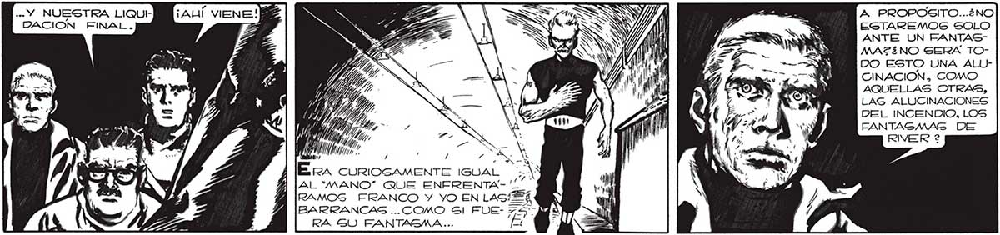

234 ... Y NUESTRA LIQUIE DACION FINAL. A PROPOSITO...¿NO ESTAREMOS SOLO ANTE UN FANTAGSMAZ¿NO SERA TODO ESTO UNA ALUCINACION. COMO AQUELLAS OTRAS, LAS ALUCINACIONES DEL INCENDIO, LOS FANTASMAG DE RIVER 2 1 id MA p , > E, Y ÉrA curRIOsAMENTE IGUAL ¿WN AL'MANO” QUE ENFRENTABARRANCAS ...COMO Gl FUERA GO FANTAGMA ... ¡AHORA MISMO GABREMOS LA NO, HOMBRES... LAS BALAS NO PUEDEN PERFORAR LA CORAZA PROTECTORA ... YA ESTAN USTEDES PRACTICGAMENTE EN MI PODER. EL DER RUMBE DEL TUÚNEL LES CIERRA ..OSARON RESISTIRNOS MORIRAN SIN REMEDIO... Gl, ESTÁN USTEDES A MI MERCED.. POR MEDIO DE LAS TE- Ss; EN POCO TIEMPO LE HARÉ DESCLAS ORDENARÉ AL “GUR- W ARMAR ESOS RESTOS QUE NOS BO” QUE VUELVA AL ATA" IMPIDEN LLEGAR HAGTA USTEDES. QUE..NO COMETERA e, Y ENTONCES LOS ULTIMOS HOW" MAS ERRORES: AHORA YO MISMO VERE LO ' : Nk cis x A S a y /ñ QA, «Y NN Sl 0 II
